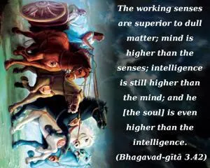
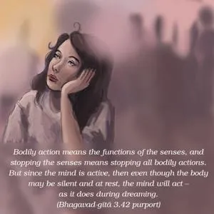
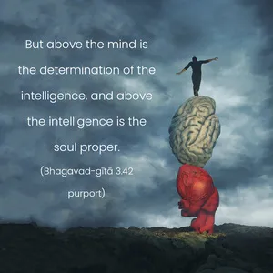

The working senses are superior to dull matter; mind is higher than the senses; intelligence is still higher than the mind; and he [the soul] is even higher than the intelligence.



The senses are different outlets for the activities of lust. Lust is reserved within the body, but it is given vent through the senses. Therefore, the senses are superior to the body as a whole. These outlets are not in use when there is superior consciousness, or Kṛṣṇa consciousness. In Kṛṣṇa consciousness the soul makes direct connection with the Supreme Personality of Godhead; therefore the hierarchy of bodily functions, as described here, ultimately ends in the Supreme Soul. Bodily action means the functions of the senses, and stopping the senses means stopping all bodily actions. But since the mind is active, then even though the body may be silent and at rest, the mind will act – as it does during dreaming. But above the mind is the determination of the intelligence, and above the intelligence is the soul proper. If, therefore, the soul is directly engaged with the Supreme, naturally all other subordinates, namely, the intelligence, mind and senses, will be automatically engaged. In the Kaṭha Upaniṣad there is a similar passage, in which it is said that the objects of sense gratification are superior to the senses, and mind is superior to the sense objects. If, therefore, the mind is directly engaged in the service of the Lord constantly, then there is no chance that the senses will become engaged in other ways. This mental attitude has already been explained. Paraṁ dṛṣṭvā nivartate. If the mind is engaged in the transcendental service of the Lord, there is no chance of its being engaged in the lower propensities. In the Kaṭha Upaniṣad the soul has been described as mahān, the great. Therefore the soul is above all – namely, the sense objects, the senses, the mind and the intelligence. Therefore, directly understanding the constitutional position of the soul is the solution of the whole problem.
With intelligence one has to seek out the constitutional position of the soul and then engage the mind always in Kṛṣṇa consciousness. That solves the whole problem. A neophyte spiritualist is generally advised to keep aloof from the objects of the senses. But aside from that, one has to strengthen the mind by use of intelligence. If by intelligence one engages one’s mind in Kṛṣṇa consciousness, by complete surrender unto the Supreme Personality of Godhead, then, automatically, the mind becomes stronger, and even though the senses are very strong, like serpents, they will be no more effective than serpents with broken fangs. But even though the soul is the master of intelligence and mind, and the senses also, still, unless it is strengthened by association with Kṛṣṇa in Kṛṣṇa consciousness, there is every chance of falling down due to the agitated mind.